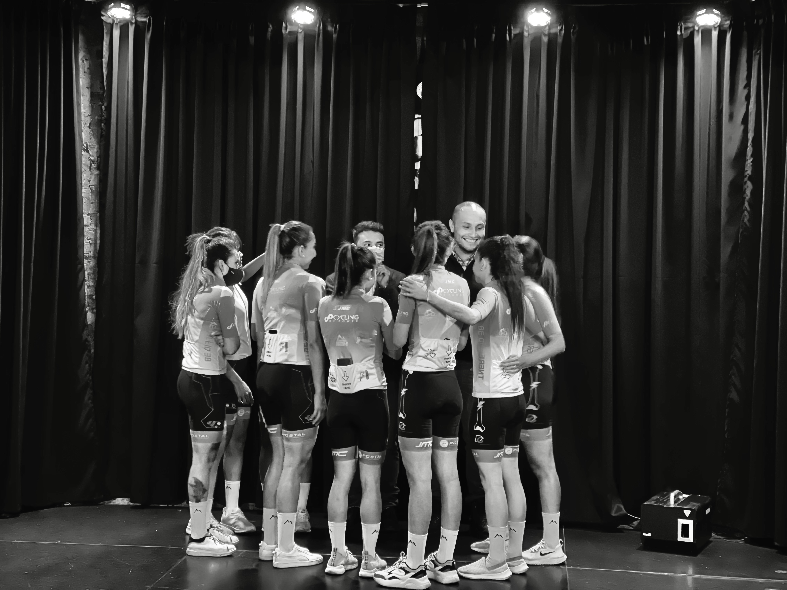

La mayoría de los problemas visibles en una organización — caída en ventas, agotamiento del equipo, crisis de marca, conflictos internos, crecimiento inestable — rara vez nacen donde parecen. Son síntomas. Debajo hay algo más profundo: una desconexión entre lo que una iniciativa es y desde dónde está tomando sus decisiones.
Oreka existe para revelar esa distancia. Y para devolverle a cada iniciativa la claridad de operar desde su verdad interior.
operamos.
Juan Bernardo Puentes lleva más de una década trabajando dentro de empresas, emprendimientos y proyectos humanos de múltiples sectores — desde deportistas hasta proyectos de inversión en diferentes países. Y en todos ellos ha detectado el mismo patrón: cuando algo no funciona, la tendencia siempre es buscar en la superficie.
Esto le ha llevado a entender que la mayoría de las organizaciones operan de afuera hacia adentro — respondiendo al mercado, a la moda, a la urgencia — cuando la única ruta de crecimiento genuina funciona en sentido contrario.
A partir de esa revelación, y de años de trabajo con líderes, equipos, artistas y emprendedores, desarrolló la Metodología Oreka y el modelo del Núcleo Estratégico: una manera propia de comprender las iniciativas humanas como organismos vivos, con propósito, cultura, estructura y capacidad real de transformar el ecosistema que tocan.
No vemos las empresas como estructuras vacías diseñadas para producir resultados. Las entendemos como organismos con núcleo propio, capaces de generar o limitar valor real en las personas, las comunidades y los ecosistemas que tocan.
Eso cambia todo. Cambia las preguntas que hacemos. Cambia lo que buscamos cuando algo no funciona. Y cambia radicalmente la naturaleza de las soluciones que construimos.
Llegamos con preguntas, no con respuestas. Con curiosidad por lo que hay debajo de lo visible — los patrones que ya operan en silencio dentro de cada organización, sin que nadie los haya nombrado todavía.
Hay un momento que se repite. El líder deja de describir su empresa y empieza a reconocerse en ella. Ese es el instante que nos interesa.
Nuestra metodología no comienza por el mercado ni por las tendencias. Comienza por comprender quién es la iniciativa — y qué tiene genuinamente para dar. Todo lo que viene después: la estrategia, la estructura, la comunicación, el crecimiento — emerge de esa claridad interior.
Lo que no tiene sustento no tiene lugar en el trabajo de Oreka. La apariencia sin contenido no es una solución — es un problema disfrazado.
Ninguna ruta de crecimiento comienza por el mercado. Comienza por comprender quién es la iniciativa y qué tiene genuinamente para dar.
Cada iniciativa es una expresión humana irrepetible. No existen soluciones transversales porque no existen dos organizaciones idénticas.
La claridad no viene de los documentos. Viene de la honestidad en cada conversación — con el cliente, con el equipo, con uno mismo.
Oreka no se aferra a las formas. Se aferra a los principios. Lo que no cambia es la dirección.

Consultor estratégico, autor y facilitador con más de una década trabajando con líderes, equipos, artistas y emprendedores en múltiples sectores.
Su trabajo nace de una observación constante: la mayoría de los problemas organizacionales tienen raíces más profundas que donde se buscan. Esa convicción dio origen a la Metodología Oreka y al modelo del Núcleo Estratégico.
"Yo interpreto y doy forma a los sueños de la gente. Mi trabajo es revelar lo que ya estaba ahí — y darle un nombre que no se olvide."